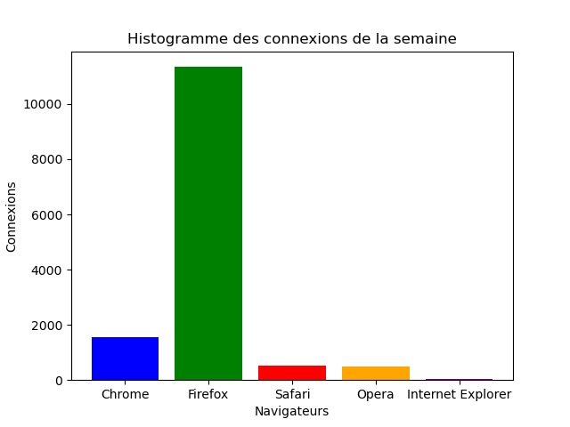

SAE : Traitement et Analyse de Données Web (Apache Logs)
Développement d'un script Python automatisé pour l'extraction de statistiques de connexion à partir de fichiers de log Apache, la visualisation des données (Matplotlib) et la publication des résultats sur une page Web statique.

1. Le Défi de l'Analyse des Logs Serveur
L'objectif était de transformer des fichiers de log Apache bruts et volumineux en indicateurs de performance clés (KPI) lisibles, afin de comprendre les habitudes de connexion et l'activité du serveur. La solution devait être entièrement automatisée et reproductible.
Objectifs Clés du Scripting
- Extraction et Traitement : Lire et filtrer les données pertinentes des fichiers de log d'accès.
- Visualisation (Data Viz) : Calculer et représenter graphiquement :
- La répartition des navigateurs (camembert).
- L'histogramme des connexions par jour (semaine et mois).
- Automatisation Complète : Gérer l'exécution via des arguments en ligne de commande (fichiers sources, répertoire de sortie).
- Qualité du Code : Assurer le respect des standards de programmation Python, incluant les tests unitaires et la documentation (Sphinx).
2. La Solution Technique : Scripting Python
J'ai développé un package Python modulaire suivant la structure stricte imposée par le cahier des charges. La logique métier (lecture, calcul, plotting) a été isolée dans différents modules pour faciliter les tests unitaires.
Technologies et Méthodologie
- Python 3.7+ : Langage principal pour le parsing de fichiers.
- Matplotlib : Librairie utilisée pour générer les graphiques (`.png`).
- Unit Testing : Création d'un répertoire `tests/` pour valider la robustesse de chaque fonction de parsing et de calcul.
- Git & Arborescence : Versionnement des codes sources et respect d'une arborescence de projet standard (`data/`, `docs/`, `nomprojet/`).
Architecture du Code et Exécution
Le programme principal (`nom_projet.py`) gère les arguments via le module `argparse`. Après traitement, les images générées par Matplotlib et le fichier HTML/CSS de présentation sont stockés dans le répertoire de sortie.
Extrait de la Commande d'Exécution
python3 statistiques-connexions-apache/main.py -p data/access.laii.log.8 data/access.laii.log.9 -d /home/papito/Documents/ 3. Résultats et Compétences Acquises
Le projet a été validé par la démonstration d'un script fonctionnel, de tests unitaires passant avec succès, et d'une documentation technique complète générée avec Sphinx.
Acquis et Livrables Clés
- Automatisation (Python) : Capacité à écrire un programme complet, modulaire et gérant des I/O complexes (fichiers logs, arguments CLI).
- Data Visualization : Maîtrise de la librairie Matplotlib pour transformer des données brutes en indicateurs visuels (camembert, histogrammes).
- Qualité et Documentation : Respect strict du cycle de vie du logiciel (tests unitaires) et production de documentation technique professionnelle (reStructuredText, docstrings).
- Gestion de Projet : Application concrète de la planification (Gantt) et du versionnement (Git) sur un projet de développement.
Leçons Apprises
Le principal challenge technique a été le parsing efficace de formats de log variables et l'agrégation des données temporelles (jours, semaines) sans surcharger la mémoire. J'ai renforcé ma compréhension des structures de données Python optimisées pour le traitement de gros volumes.